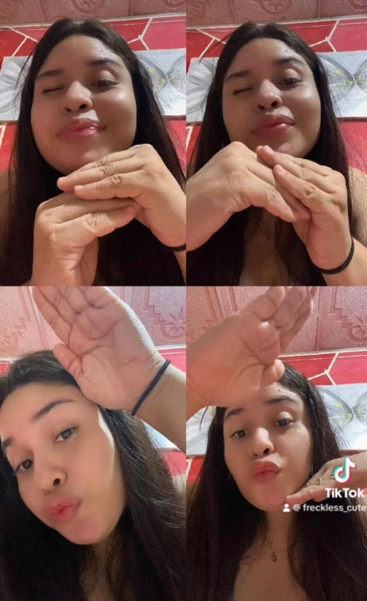

1. ¿De qué manera llegue a su vida?
Fue un día en el cual miraba mis redes sociales, yo nunca hago caso a las sugerencias que me aparecen en las redes, pero al ver ese nombre hermoso María Carcache, posterior esa foto de perfil, ay no, ver esa foto fue el inició de todo al enviarte la solicitud.